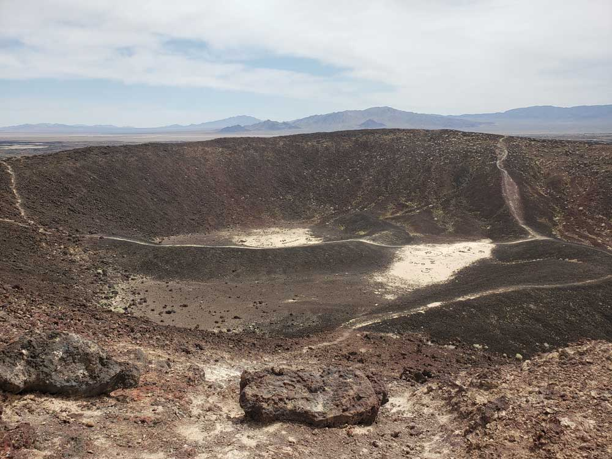
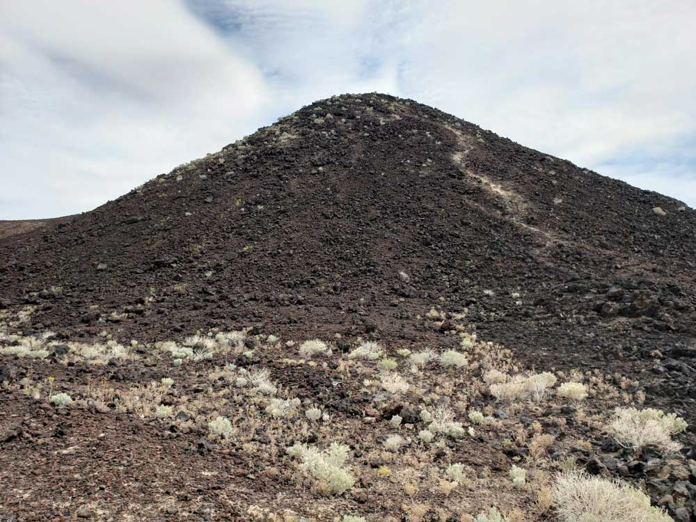
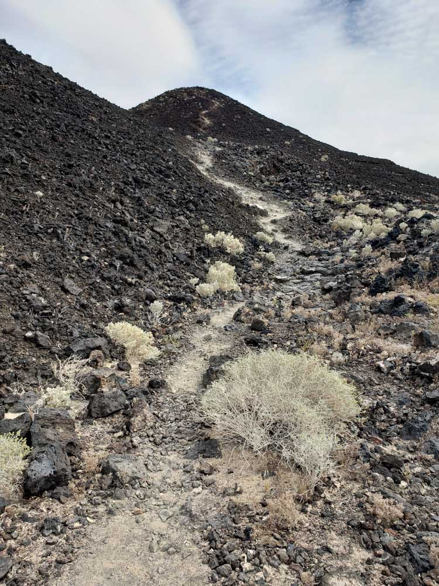
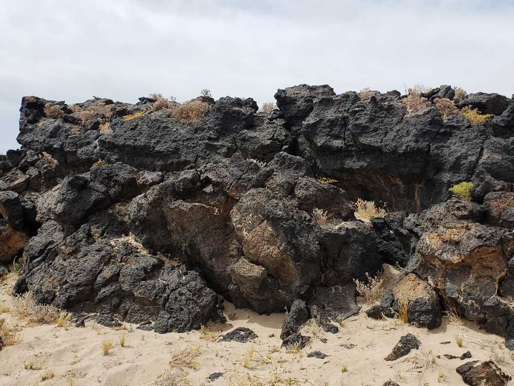
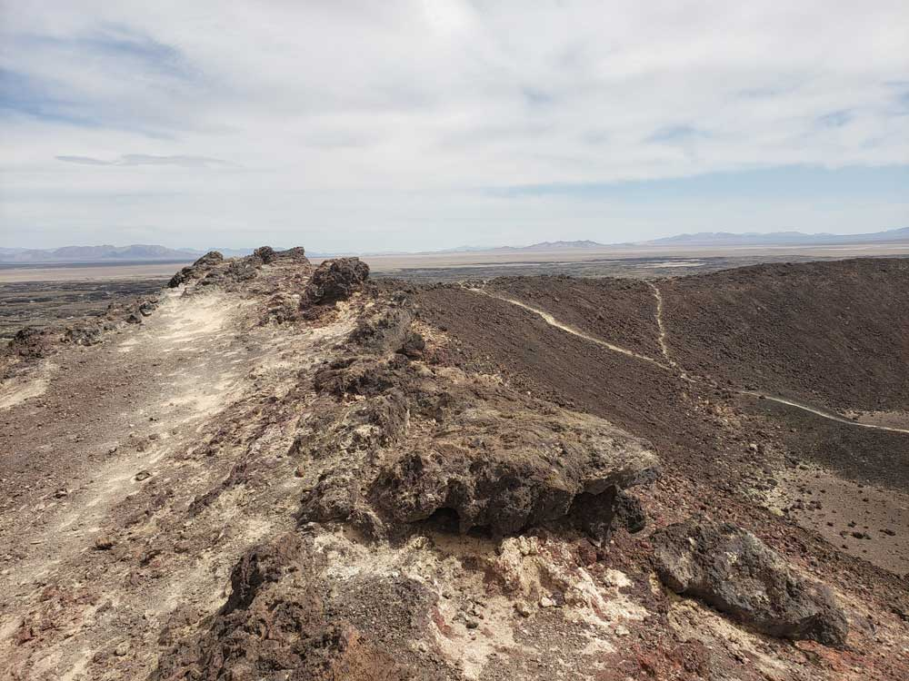
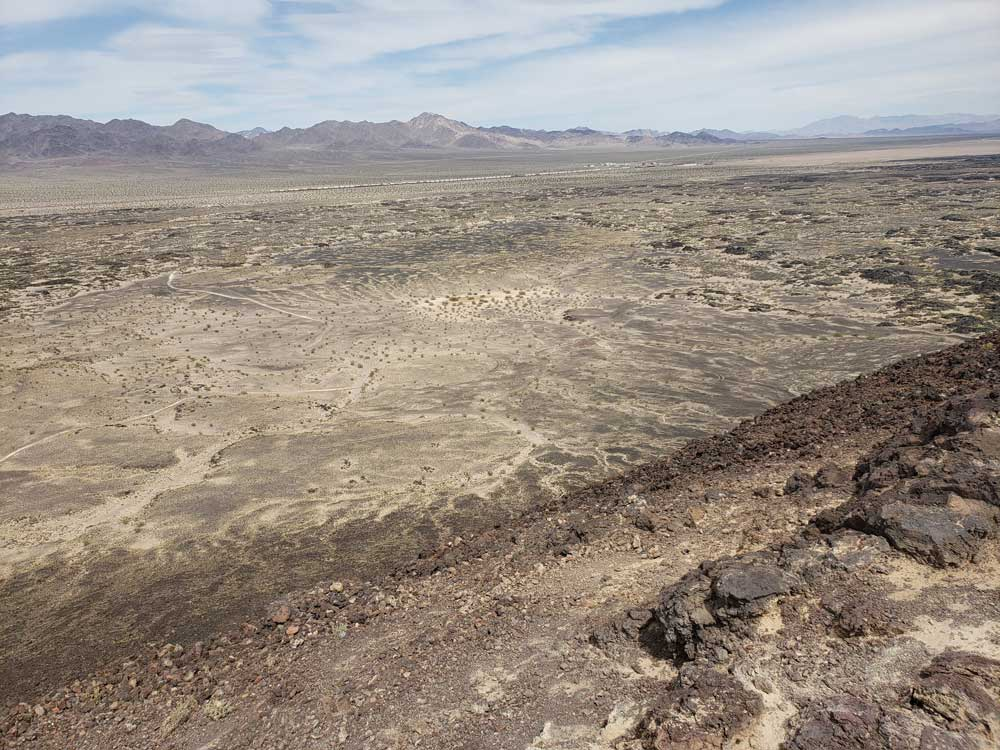

Example of symmetrical volcanic cinder cone, 250 feet high and 1,500 feet in diameter. The site offers picnic tables, restroom facilities, hiking trail to the rim
How to Get There
From Los Angeles (191mi) Get on US-101 S. Follow I-10 E, I-15 N and I-40 E to Crucero Rd in Ludlow. Take exit 50 from I-40 E. Follow National Trails Hwy to Crater Rd in Amboy.
From Las Vegas (137mi) Take N 6th St to Las Vegas Blvd N. Take I-15 S, Morning Star Mine Rd, Kelso Cima Rd and Kelbaker Rd to Crater Rd in Amboy. Turn left onto Crater Rd.
Overview
Amboy Crater is a symmetrical volcanic cinder cone about 250 feet high rising from a black lava field in the Mojave Desert, just off historic Route 66 near the ghost town of Amboy and about 75 miles from both Barstow and Needles. It was designated a National Natural Landmark in 1973 for its visual and geological significance and is now part of Mojave Trails National Monument, established in 2016 and managed by the Bureau of Land Management. The cone is about 79,000 years old, and its last eruption was roughly 10,000 years ago. Generations of Route 66 travelers stopped here to climb “a real volcano” before Interstate 40 opened in 1973, and today visitors hike to the rim to look out over lava flows, collapsed lava tubes and spatter cones.
Access
The crater is about 2.5 miles southwest of the town of Amboy, on a side road off National Trails Highway, the old Route 66, in San Bernardino County. From Needles, take I-40 west about 65 miles to Kelbaker Road, go south about 10 miles to National Trails Highway, turn left and go about 8 miles to Crater Road. From Los Angeles or Barstow, take I-40 east to exit 50 at Ludlow and follow National Trails Highway to Crater Road in Amboy. Two paved lots hold about 17 vehicles, with picnic tables, an accessible vault toilet and a shaded overlook, but there is no running water. Cell service is limited and help is far away, so tell someone your plans before you go.
Seasons
The site is open year-round from sunrise to sunset, but summer heat is the main concern. Temperatures in the open lava field can be extreme, so hike early or choose the cooler months, with BLM brochures suggesting October through April. Bring at least one liter of water per person, a hat and sturdy shoes in any season.
Things to Do
Hike to the Crater Rim
The Western Cone Trail crosses the lava field to the base of the cone, followed by a steep, rocky climb to the rim, where you can look into the crater and out over the surrounding lava flows.
Explore the Lava Field
The black lava field around the cone includes collapsed lava tubes and spatter cones. Stay on the trail to protect the surface and watch for sharp, rough rock.
Visit on a Route 66 Road Trip
The crater makes an easy stop on a drive along historic Route 66, along with the ghost town of Amboy nearby, and a picnic at the day-use area or overlook.
Visitor Centers
There is no visitor center at Amboy Crater. The day-use area has picnic tables, an accessible toilet, a shaded overlook with benches and an entrance kiosk, and the BLM website lists current conditions and safety advice. The nearest services are in Amboy, Ludlow and the larger towns along I-40.
Camping and Lodging
There is no camping at the crater's day-use area, and campers should check with the BLM about options in the surrounding Mojave Trails National Monument. Motels and restaurants are available in Barstow and Needles, each about 75 miles away, and in Twentynine Palms. Services in the tiny communities along old Route 66 are very limited, so fill the tank and bring supplies.
This article uses material from the Wikipedia articles "Amboy Crater", which are released under the Creative Commons Attribution-Share-Alike License 3.0. Additional information from the Bureau of Land Management.
Featured Trails

Amboy Crater Trail
4.1 miles roundtrip, 442 feet
Trailhead: End of a side road forking south off old Route 66.
Volcanic peak close to old Route 66, reached by a path across twisted lava formations.





